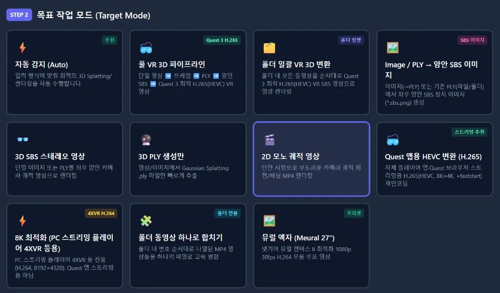

최초 1회 환경 준비
GitHub에서 받은 뒤 설치 스크립트를 한 번만 실행하면 Python 가상환경, CUDA 설정, Apple SHARP 모델이 자동으로 준비됩니다.
bat\run_setup_environment.bat
Apple의 SHARP (3D Gaussian Splatting) 모델을 그대로 사용하면서,
복잡한 명령어나 여러 스크립트를 외울 필요 없이 run_tool_dashboard.bat 대시보드 하나만으로
고밀도 .ply, 좌우 양안 .sbs 이미지, 2D 모노 궤적 영상,
YouTube/Quest 3용 VR 영상까지 클릭 몇 번으로 만들 수 있습니다.
브이 포즈의 우아한 스튜디오 초상화.ply → 2D 모노 궤적
63.0 MB PLY · 30 FPS
복잡한 CLI 명령어나 개별 실행 파일을 찾을 필요가 없습니다. run_tool_dashboard.bat 하나만 실행하면
모드 선택부터 변환, VR 인코딩까지 웹 대시보드에서 전부 해결됩니다.
GitHub에서 받은 뒤 설치 스크립트를 한 번만 실행하면 Python 가상환경, CUDA 설정, Apple SHARP 모델이 자동으로 준비됩니다.
bat\run_setup_environment.bat
run_tool_dashboard.bat을 열고 파일 또는 폴더를 고른 뒤
3D PLY 생성, 양안 SBS 이미지, 2D 모노 궤적 영상,
풀 VR 3D 파이프라인 중 원하는 카드를 클릭하세요.
run_tool_dashboard.bat
완료된 .ply, .sbs.png, VR 영상을 바로 확인하거나
PC 서버를 켜서 Quest 3 네이티브 뷰어 Splatia로 감상하세요.
run_quest_pc_server.bat

run_tool_dashboard.bat) — 모든 변환 모드를 카드 클릭 한 번으로 실행
11 Target Modes
run_20261115-033156_캐릭터단일 캐릭터 이미지 4장으로 생성한 63 MB 고밀도 PLY, 좌우 양안 SBS 이미지, 그리고 PLY에서 직접 렌더링한 2D 모노 궤적 영상을 직접 확인해 보세요.
입력 사진 한 장으로 추론한 exec-7e2c6588-807c-47e0-ae4f-8cf11b79ff65.ply(63.00 MB)를
rotate_forward 카메라 궤적으로 30 FPS 렌더링한 결과입니다.
일반 2D 줌·패닝과 달리 전경 인물과 배경 사이의 시차(Parallax)가 입체적으로 분리되어 자연스러운 공간감을 보여줍니다.
run_tool_dashboard.bat → 2D 모노 궤적 영상
Gemini_Generated_Image_u51sc5u51sc5u51s.ply를 3D Gaussian Splatting 뷰어에서
직접 회전시키며 좌·우 양안(SBS)으로 캡처한 결과입니다.
단순 2D 이미지에 깊이맵을 씌워 늘리는 방식이 아니라, Apple SHARP가 복원한 실제 3D 가우시안 스플랫 공간을 카메라가 움직이며 렌더링하기 때문에 회전 시에도 경계선 왜곡이 적고 입체감이 훨씬 자연스럽습니다.
실제 3D Gaussian Splatting 기반 양안 렌더링
Lightroom 실사 사진에서 생성한 3D PLY를 세로형 30 FPS 궤적 영상으로 렌더링한 결과입니다.
고해상도 인물/풍경 사진에서도 피사체와 배경의 깊이 분리가 또렷하게 표현됩니다.
캐릭터 이미지뿐 아니라 직접 찍은 사진도 run_tool_dashboard.bat에서 동일한 방식으로 3D 영상화할 수 있습니다.
동일 실행(run_20261115-033156_캐릭터)에서 생성된 4종의 3D Gaussian Splatting .ply 파일입니다.
대용량(각 63 MB) 고밀도 스플랫 데이터이므로 GitHub 저장소 정책상 원격 저장소에는 포함하지 않고,
로컬 대시보드·Splatia 뷰어 또는 별도 릴리스 에셋으로 활용합니다.
| 결과 이름 | PLY 파일명 | PLY 용량 | SBS 출력 |
|---|---|---|---|
| 브이 포즈 스튜디오 초상화 | 브이 포즈의 우아한 스튜디오 초상화.ply | 63.00 MB | 2052 × 1536 SBS |
| 스튜디오 인물 A | exec-7e2c6588-807c-47e0-ae4f-8cf11b79ff65.ply | 63.00 MB | 2172 × 1448 SBS |
| 스튜디오 인물 B | Gemini_Generated_Image_ndcw4tndcw4tndcw.ply | 63.00 MB | 3072 × 2752 SBS |
| 스튜디오 인물 C | Gemini_Generated_Image_u51sc5u51sc5u51s.ply | 63.00 MB | 3584 × 2400 SBS |
대시보드에서 「풀 VR 3D 파이프라인」을 클릭하기만 하면 아래 5단계 전체 과정이 자동으로 순서대로 실행됩니다.
프레임마다 실제 3D Gaussian Splatting(.ply) 공간을 만든 뒤 양안 VR 이미지로 다시 찍어 합치기 때문에
무대 조명, 머리카락, 안무 디테일이 시중 VR 변환보다 훨씬 선명합니다.
.ply)을 생성한 뒤 좌·우 양안 카메라로 직접 재렌더링
이 툴킷은 상업적 목적이 아니라 더 많은 분들이 3D와 VR을 쉽고 재미있게 함께 즐길 수 있도록
전부 무료로 공개합니다. GitHub에서 받거나 ZIP으로 내려받아 bat\run_setup_environment.bat를 한 번 실행한 뒤,
run_tool_dashboard.bat로 바로 시작해 보세요.
git clone --recurse-submodules https://github.com/shimansKim/sharp-gaussian-splatting-vr-toolkit.git